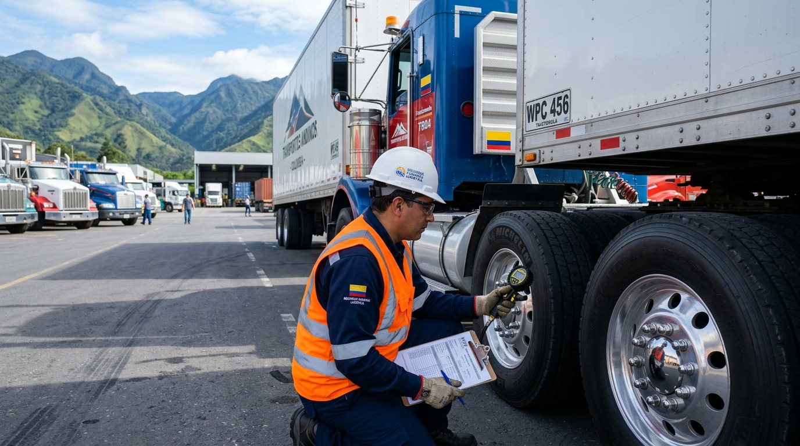

Resolución 40595
Noviembre 2026 / 6 min
Fiscalización PESV: Cómo superar las inspecciones de SuperTransporte sin sanciones
Los 5 hallazgos más comunes en auditorías a flotas contratistas y cómo la digitalización de la inspección preoperacional blinda jurídicamente a la empresa.